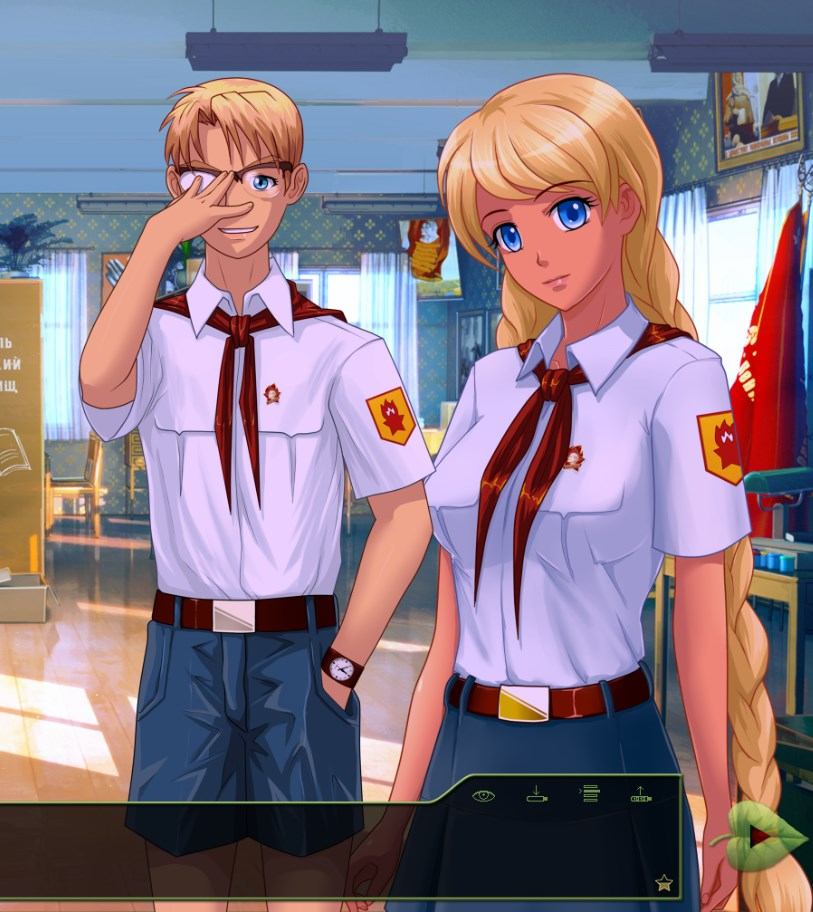

7 дней лета, билд 0.11а (Лена-френдзон)

7 дней лета, билд 0.11а (Лена-френдзон)
автор 7dl-kun в Пн 22 Дек 2014 - 0:35
1. Ставим Герка
2. Выбираем в д.2 провожатого Славю или Алису.
3. Вечером в д.2 идём в гости к Лене.
4. Начиная с д.3 начинается фз-рут.
Забирать здесь
скрипты+графика: rghost.ru/59870782
звуки+музыка: rghost.ru/59870675
changle-log:
Исправлены выхода на сычей и ряд рутов в процессе разработки.
для д.2 в случае отказа Лены снимается оценка по лп для Алисы и Славяны (сделано для упрощения входа на фз-рут)
куча других логических жуков.

7dl-kun- Находка для шпиона

- Сообщения : 3026
Дата регистрации : 2014-09-07
Откуда : здесь столько наркоманов?
Re: 7 дней лета, билд 0.11а (Лена-френдзон)
автор Chess в Пн 22 Дек 2014 - 0:42

Chess- Находка для шпиона
- Сообщения : 3798
Дата регистрации : 2014-10-05
Откуда : Город на краю света
Re: 7 дней лета, билд 0.11а (Лена-френдзон)
автор 7dl-kun в Пн 22 Дек 2014 - 0:47
7dl-kun- Находка для шпиона
- Сообщения : 3026
Дата регистрации : 2014-09-07
Откуда : здесь столько наркоманов?
Chess- Находка для шпиона
- Сообщения : 3798
Дата регистрации : 2014-10-05
Откуда : Город на краю света
Re: 7 дней лета, билд 0.11а (Лена-френдзон)
автор 7dl-kun в Пн 22 Дек 2014 - 0:49
7dl-kun- Находка для шпиона
- Сообщения : 3026
Дата регистрации : 2014-09-07
Откуда : здесь столько наркоманов?
Re: 7 дней лета, билд 0.11а (Лена-френдзон)
автор peregarrett в Пн 22 Дек 2014 - 0:52
- Код:
un "Может, она была открыта - он зашёл и просто захлопнул дверь за собой."
- Код:
elif alt_day4_fz_sh == 2:
show sl serious pioneer with dspr
un "Устал, да? Отдохни немного."
me "А ты?"
un "Да как-то не отдыхается, мы уже столько Шурика ищем…"
Еще - после медпункта в компании Алисы
- Код:
dv "Куда пойдём?"
"Понятия не знаю, куда вы пойдёте, а я направляюсь к клубам."
dv "Зачем?"
"Сброшу тебя с крыши для симметрии."
dv "Сим… Чего?"
me "Чтобы мне одному не так скучно лежать было."

peregarrett- Находка для шпиона
- Сообщения : 3264
Дата регистрации : 2014-09-07
Возраст : 36
Re: 7 дней лета, билд 0.11а (Лена-френдзон)
автор peregarrett в Пн 22 Дек 2014 - 2:30
peregarrett- Находка для шпиона
- Сообщения : 3264
Дата регистрации : 2014-09-07
Возраст : 36
Re: 7 дней лета, билд 0.11а (Лена-френдзон)
автор Arlien в Пн 22 Дек 2014 - 5:57
- Спойлер:
- 2006 – дети по-прежнему сидят голодом
2091, 2116, 2118 - бесхозные реплики
2187 – «нипочему» слитно, запятые вокруг «вроде» лишние
2222 – неудачный конец фразы. «Будто бы его и не было», а лучше вообще срезать.
2227 – запятая после «взгляда»
2265 – «тогда» с запятой убрать можно, переусложнение фразы
2279 – лишняя запятая после «то есть»
2303 – лишняя запятая после «схватившись»
2320 – аналогично 2279
2598 – лишнее «на»
2600 – «девочки», «удивила»
2601 – «освещенное»
2646 – первую запятую лучше заменить на дефис
2665 – «родители»
2722 – «поборола»?
3048 – «напомнил»
3051 – бесхозная фраза
3249 – я ничего не понял
3288 – «ниЖе»
3301 – лишняя запятая
3560 – «завязать»
3588 – не ми, а ун
3696 – возможно, «ей подурнело», а не «выглядела подурневшей»?
3705 – «медаль»?
3856 – «совесть» наверное следует убрать в кавычки
3867 –«сквозь» полосу препятствий?
3904 – «стен»
3914 – запятая после «и»
4123 – «что», не «чтобы»
4127 – «повыбираВ»
4139 – первая запятая лишняя
4230 – «явно»
4231 – «решиЛ»
4257 – Мики нэт
4514 – запятая после «подобрать», «толькО»
4576 – «сочтемся», наверное
4595 – «шпалаМ»
4596 – «назначениЯ»
4608 – «якорЯ»?
4940 – лишняя запятая после «дальше»
4970 – лишний пробел после «Ничего»
5245 – «удивительноГО»
5338 – «пусть высылает»?
5352 – запятая после «пылью»
5371 – «скучноМ»
5383 – лишняя запятая после «сказать»
5384 – «накатилА»
5752 – лишняя запятая после «по ночам»
5772 – лишняя запятая после «тем более»
Arlien- Людовед

- Сообщения : 1322
Дата регистрации : 2014-09-08
Re: 7 дней лета, билд 0.11а (Лена-френдзон)
автор 7dl-kun в Пн 22 Дек 2014 - 10:08
Офигения? В каком смысле?peregarrett пишет:А вообще - прочитал с чувством офигения. Это ж что тогда дальше будет?
Arlien
- Спойлер:
2006 - а что не так с этим выражением?
Последний раз редактировалось: 7dl-kun (Пн 22 Дек 2014 - 10:29), всего редактировалось 1 раз(а)
7dl-kun- Находка для шпиона
- Сообщения : 3026
Дата регистрации : 2014-09-07
Откуда : здесь столько наркоманов?
peregarrett- Находка для шпиона
- Сообщения : 3264
Дата регистрации : 2014-09-07
Возраст : 36
Re: 7 дней лета, билд 0.11а (Лена-френдзон)
автор 7dl-kun в Пн 22 Дек 2014 - 10:37
Ну, мы потрогали за мягкое вымя пространство Ответов. Это ещё не сычевальня, но к ней уже достаточно близко.peregarrett пишет:В хорошем
7dl-kun- Находка для шпиона
- Сообщения : 3026
Дата регистрации : 2014-09-07
Откуда : здесь столько наркоманов?
Re: 7 дней лета, билд 0.11а (Лена-френдзон)
автор Arlien в Пн 22 Дек 2014 - 11:08
Ну, как... Оно несогласованное?.. то есть конечно можно списать на фолклор, но на мой взгляд оно не на фолклор похоже, а на лингвохимеру, образующуюся, когда не можешь решить, что звучит лучше, и нечаянно сращиваешь альтернативные конструкции, а ля "то ли они _голодные_ сидят, то ли их голодом _морят_".что не так с этим выражением?
Ну не пять, а три, ибо все, что до вечера, вычитано еще в прошлый заход, и часть поскипана, шоб не расстраиваться, и не за ночь, а за пол-ночи - за ночь-то я книжку среднего объему читаю...как за ночь можно вычитать 5к строк текста?!
Энто, в опчем, секретное ниндзюцу, отточенное годами запойного чтения всего и вся!
Arlien- Людовед
- Сообщения : 1322
Дата регистрации : 2014-09-08
Re: 7 дней лета, билд 0.11а (Лена-френдзон)
автор 7dl-kun в Пн 22 Дек 2014 - 11:22
не расстраиваться?Arlien пишет:часть поскипана, шоб не расстраиваться
С "голодом сидят" подумаю что можно сделать.
7dl-kun- Находка для шпиона
- Сообщения : 3026
Дата регистрации : 2014-09-07
Откуда : здесь столько наркоманов?
Re: 7 дней лета, билд 0.11а (Лена-френдзон)
автор peregarrett в Пн 22 Дек 2014 - 12:47
peregarrett- Находка для шпиона
- Сообщения : 3264
Дата регистрации : 2014-09-07
Возраст : 36
Re: 7 дней лета, билд 0.11а (Лена-френдзон)
автор peregarrett в Вт 23 Дек 2014 - 3:31
- Код:
show sh normal_smile pioneer far at cright behind un
- Спойлер:

peregarrett- Находка для шпиона
- Сообщения : 3264
Дата регистрации : 2014-09-07
Возраст : 36
Re: 7 дней лета, билд 0.11а (Лена-френдзон)
автор 7dl-kun в Вт 23 Дек 2014 - 3:34
7dl-kun- Находка для шпиона
- Сообщения : 3026
Дата регистрации : 2014-09-07
Откуда : здесь столько наркоманов?
Re: 7 дней лета, билд 0.11а (Лена-френдзон)
автор Arlien в Вт 23 Дек 2014 - 6:08
Ну вам охота читать очередную истерику на тему "Сливя нитакая!11"? Вот и мне ее писать неохота.не расстраиваться?
Так что я все аккуратненько ... платочком. Ради великого блага, ага. Шоб не отвлекать.
К слову говоря, шахты с Электроником весьма душевные вышли. Антикуресно буде на его рут поглядеть. Со сбором машины времени из ламп и рычагов :3
Тока был там один момент... Помните может недавнюю тему насчет мерисьюшности-перекачанности? Которых коллективно не нашли?
Так вот тут один момент был, резанувший глаз достаточно серьезно, чтобы я его зарепортил.
Перед самым уходом на поиски, как раз с Электроником, ага.
- Спойлер:
- Товарищ автор, а почему это быдлоохранник и гуманитарий рассказывает кибернетику и вообще Электронику про инфразвуки, а не наоборот?..
Может быть, да, логика лояльного читателя это простит.
Но с художественной точки зрения - к чему на пустом месте приписывать дополнительную эрудицию ГГ без объявленного перка эрудиции и ронять авторитет и без того забитых неудачников на их собственном поле?
Это не прямой реквест правки, нет - просто прикиньте на досуге, стоит ли чуть более выгодное позиционирование Эла затраченных на реверс букв.
Arlien- Людовед
- Сообщения : 1322
Дата регистрации : 2014-09-08
Re: 7 дней лета, билд 0.11а (Лена-френдзон)
автор 7dl-kun в Вт 23 Дек 2014 - 9:58
Насчёт Электроника и необразованного быдлогуманитария как-то странновато, или у нас Герк априори тупица и читает до сих пор по слогам?
7dl-kun- Находка для шпиона
- Сообщения : 3026
Дата регистрации : 2014-09-07
Откуда : здесь столько наркоманов?
Re: 7 дней лета, билд 0.11а (Лена-френдзон)
автор Arlien в Вт 23 Дек 2014 - 11:06
Не в обиду говорю, если что, просто как есть.
Ну, не то что прямо тупица, но по сумме характеристик... Вот смотрите.
В синем углу - Герк.
Объявленный перк "эрудит" есть? Нету.
Объявленный интерес к электротехнике, исключая отладку систем dolbit normal'no? Нет.
Зато есть объявленная затяжная депрессия, которая подавляет общее любопытство и совсем не способствует усвоению рандомных непрофильных знаний, да и вообще негативно влияет на мыслительные способности.
В красном - Эл.
Объявленных проблем с мышлением нет.
Объявленное хобби - есть.
Объявленное чтение необходимой литературы - есть.
Вопрос - у кого больше шансов и кто быстрее прочухает, в чем дело?
Ответ - а неважно это!
Я уже говорил и еще раз подчеркну - речь совсем не о чьем-то интеллекте!
Речь о том, что получают персонажи и рассказ от той или иной постановки сцены!
Если Герк вещает Элу - Герк получает нафиг ему ненужную объявленную компетенцию в излучателях, Эл не получает ничего, повествование тоже не получает ничего, кроме своего продолжения.
Если вице верса - Герк не теряет ничего, а Эл получает объявленную и продемонстрированную (sic!) компетенцию хоть в чем-то, что ему как персонажу очень нужно, потому что изначально это вообще не персонаж, а ходячая запчасть - оттенялка ГеГе и комикал релиф. Сюжет, соответственно, получает несколько более живого персонажа.
Arlien- Людовед
- Сообщения : 1322
Дата регистрации : 2014-09-08
Re: 7 дней лета, билд 0.11а (Лена-френдзон)
автор 7dl-kun в Вт 23 Дек 2014 - 12:24
7dl-kun- Находка для шпиона
- Сообщения : 3026
Дата регистрации : 2014-09-07
Откуда : здесь столько наркоманов?
Re: 7 дней лета, билд 0.11а (Лена-френдзон)
автор peregarrett в Вт 23 Дек 2014 - 23:12
Пора в ветку новой версии перекатываться, а то опять люди будут не ту качать
peregarrett- Находка для шпиона
- Сообщения : 3264
Дата регистрации : 2014-09-07
Возраст : 36